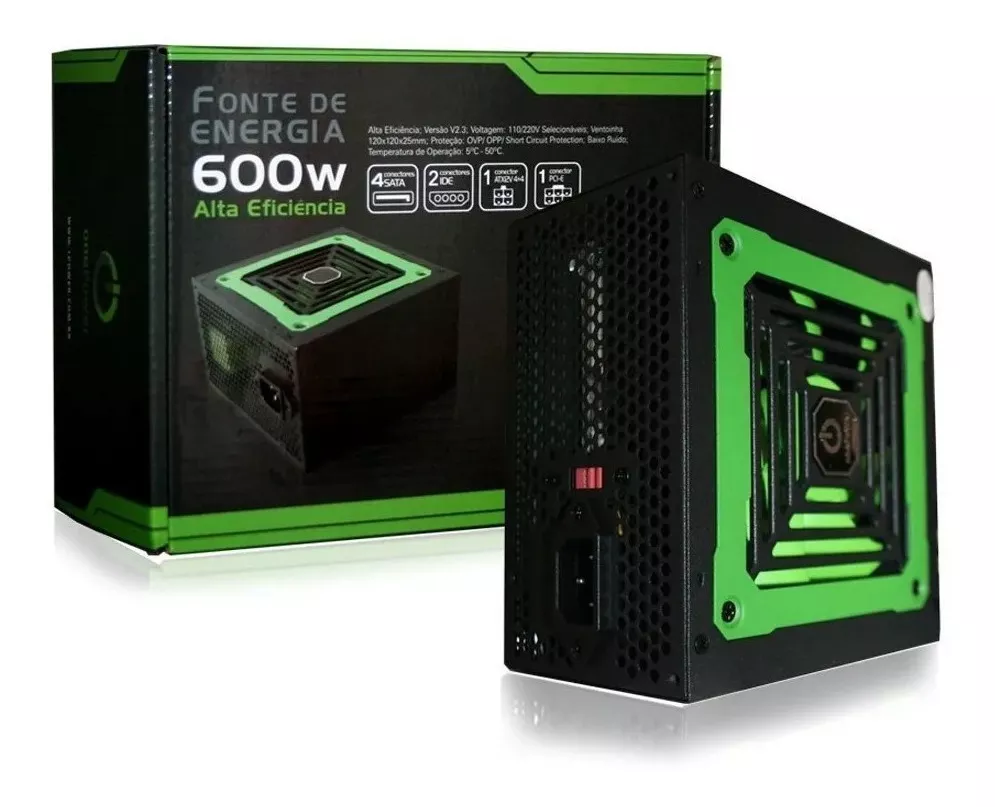
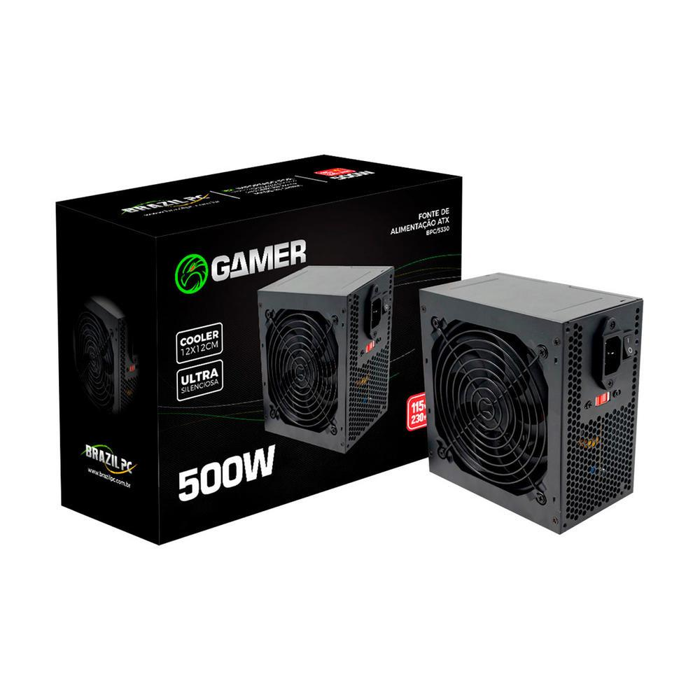

Fonte
A placa mãe é a parte do computador onde todos os componentes são interligados. Pense na placa mãe como o sistema nervoso do seu computador. Pois bem, a placa mãe opera de uma forma bem parecida. Isso porque ela é formada por diversos circuitos que funcionam como os nervos do seu computador, levando dados para os componentes envolvidos em cada ação que acontece. Ou seja, é nela que as partes do seu computador trocam as informações que fazem com que o sistema funcione da forma que você vê na sua tela.
Informações sobre o produto
Para escolher a placa-mãe ideal é definir um modelo que tenha o tamanho adequado para o seu gabinete. Por se tratar de uma peça que interliga todos os outros componentes do computador, o ideal é que esse dispositivo não fique tão apertado e deixe espaço suficiente para passagem de ar. É comum as pessoas se pergutaream o que faz uma placa mãe melhor do que a outra, e existem vários fatores que podem definir isso, incluindo: Compatibilidade: compatibilidade com os componentes que você planeja usar, como CPU, memória, armazenamento e dispositivos periféricos. Na hora de escolher sua placa-mãe, é preciso levar em consideração que uso aquele computador terá. O chipset dá nome a um conjunto de chips que está presente na sua placa mãe. Apesar de ser um componente menos conhecido, ele é vital para o funcionamento da máquina.
Fonte Atx 600w Real One Power
Mp600w3i Eps 12v V2.3 20/24pin

À vista: R$ 232,00
À prazo: em 12x de R$ 22,00
Fonte Brazil PC ATX, 500W Real,
24 Pinos, Com Cabo

À vista: R$ 121,60
À prazo: em 5x de R$ 28,61
Fonte ATX 400W 80 Plus White
PFC Ativo Draxen - DN400